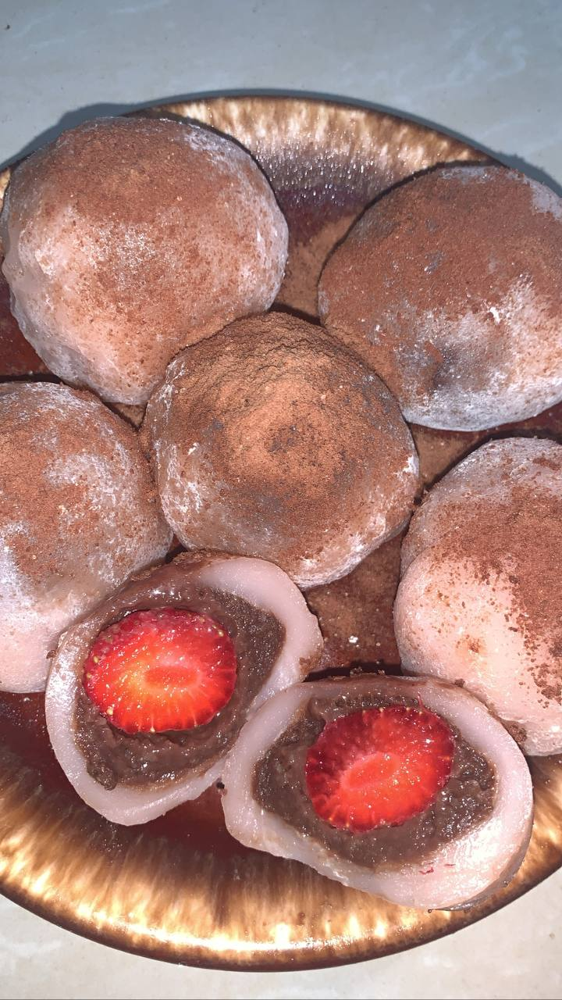

Hi, Wellcome! di Dapur Pelajar! WEB ini dibuat untuk kalian para pecinta jajan dan untuk lebih mengenal Dapur Pelajar. Dapur Pelajar dibuat pada tahun 2021. Awal mula saya buat usaha ini untuk menambah uang jajan sehari-hari. Mungkin ada yang bertanya-tanya mengenai nama Dapur Pelajar ini dan kenapa saya membuat nama ini. Sebelum nya saya itu hobi banget masak, otomatis itu pekerjaan dapur, makannya kenapa saya namakan ada unsur dapurnya. Untuk kata Pelajar karna saya masih pelajar dan kebetulan pasaran saya juga anak pelajar seperti saya makannya saya buat kata Pelajar di dalamnya. Selain itu, karna incaran utama saya adalah seorang pelajar juga maka yang saya jual harga nya pun saya sesuaikan dengan harga pelajar. Semoga dengan adanya WEB ini, Dapur Pelajar bisa makin bekembang dan semoga dapaet terus memberikan yang terbaik untuk para cust nya.. &joy!
1. Cireng
Cireng isi merupakan jajanan khas Jawa Barat yang terbuat dari tepung tapioka dan berisikan topping-topiing tertentu dan dibentuk dengan bentuk kue pastel.
Varian Cireng Isi
- Ayam Pedas
- Bakso Pedas Manis
- Keju
2. Sandwich Fruit

Sandwich Buah atau biasa disebut Sando Fruit. Buah yang saya pakai untuk menu ini adalah buah stoberi yang dipadukan dengan lapisan whip cream yang manis dan creamy
3. Mochi Daifuku
Mochi atau bisa disebut Daifuku ini sempat viral dibeberapa social media. Mochi yang saya buat berisi buah stoberi dan dilapisi selai coklat diluarnya.
Nah itu dia menu dari Dapur Pelajar. Semoga kalian bisa tertarik dengan beberapa menu yang ada di Dapur Pelajar dan semoga kalian bisa merasakan menu-menu tersebut yaahh...